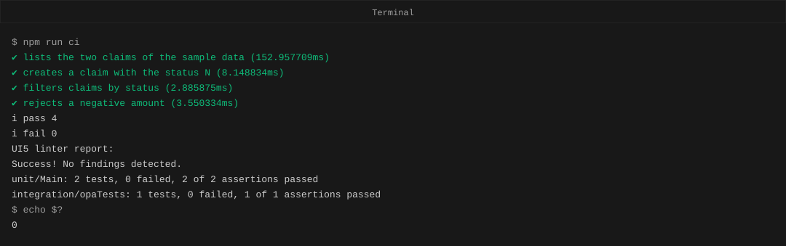
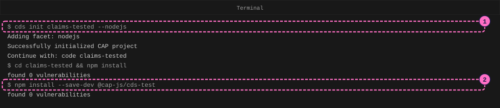
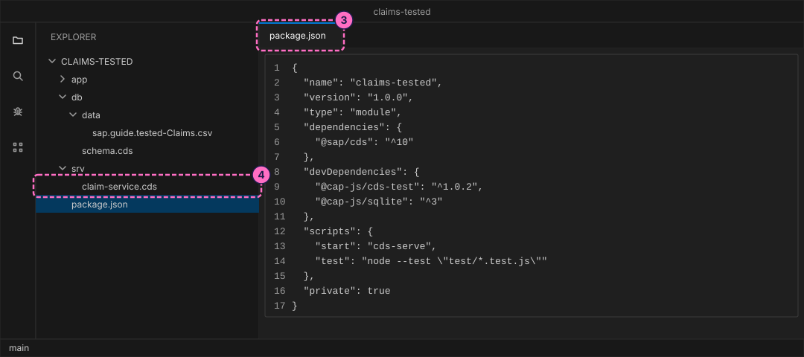
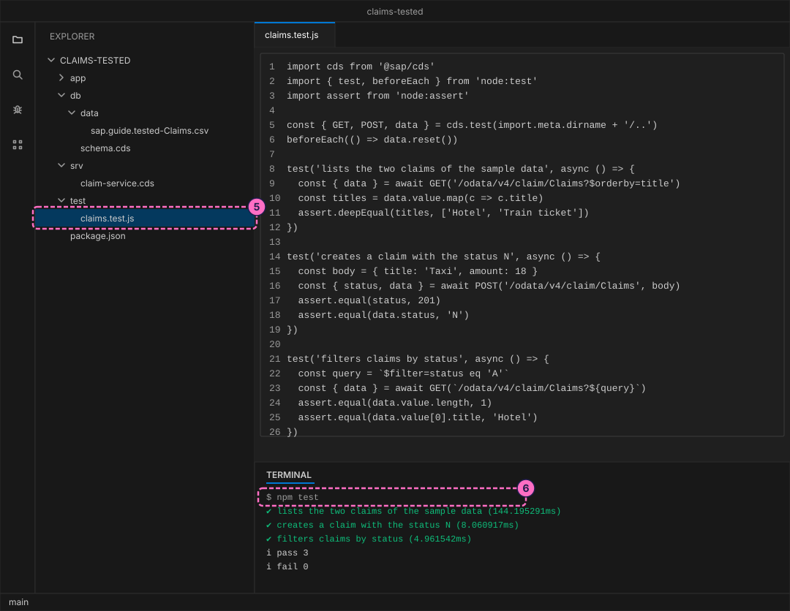
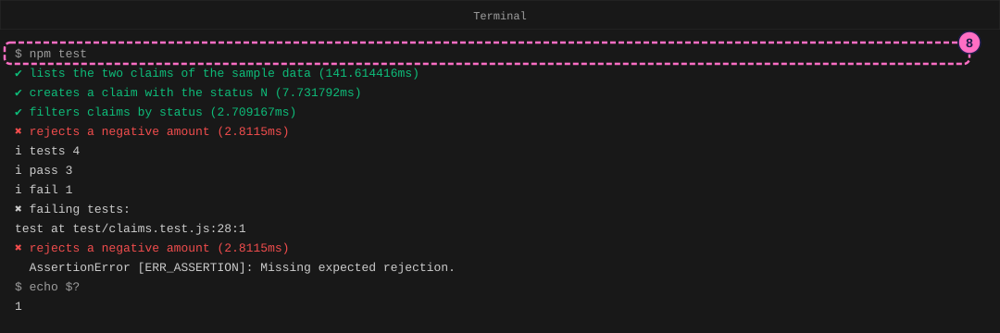
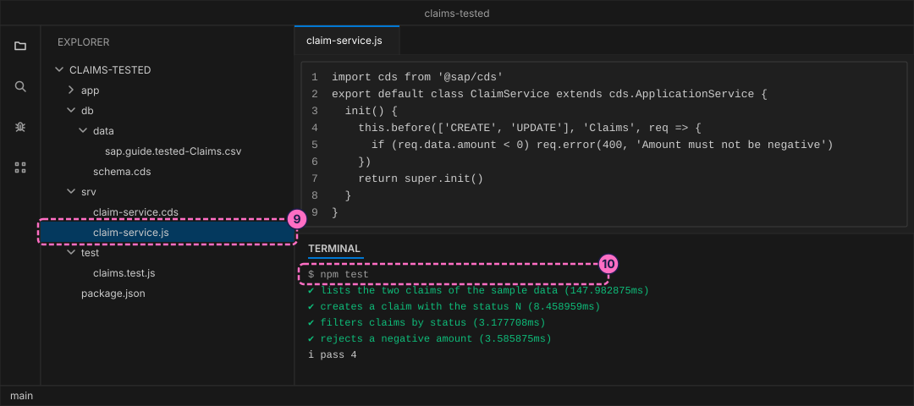

SAP Guide: Test a CAP Service and a UI5 App
|
This content was generated with the assistance of AI and should be verified against the official documentation before being relied on in production. |
Checked on 2026-11-13 against CAP Node.js 10.2 (@sap/cds 10.2.2, @sap/cds-dk 10.2.1, @cap-js/cds-test 1.0.2), UI5 Tooling 4.0.73 with the UI5 linter 1.23.8, OpenUI5 1.154.0, Node.js 24.21 and Google Chrome in headless mode.
What you build
This is a teaching model built with CAP. It is not SAP S/4HANA or SAP SuccessFactors and does not reproduce their screens.
You build a small expense claims service and a small UI5 app, and then you write the tests that a pipeline would run after every change. The service gets four tests that start it, send HTTP requests to it and check the answers. One of them is written first and fails, so you see what a failing test looks like, and then you add the code that makes it pass. The UI5 app gets a static check with the UI5 linter, a QUnit unit test and an OPA5 test that presses a button in the running app. A script runs the browser tests in a local headless Chrome. At the end, one command runs everything and reports success or failure as an exit code, which is what a CI server reads.

Before you start
-
No account is needed: the CAP tools, UI5 Tooling and OpenUI5 install from the public npm registry without signing in, and the tests run in a Chrome on your own computer. Installing
@sap/cds-dkand@sap/cdsmeans accepting the SAP Developer License Agreement, version 3.2, which the packages state themselves; the lab README names it. UI5 Tooling, OpenUI5, the UI5 linter and@cap-js/cds-testare Apache-2.0 licensed. -
Install Node.js 22.12 or newer and the CAP command line tools (
npm install --global @sap/cds-dk, as in the guide Your First CAP Service).node -vandcds versionprint the versions. -
Install Google Chrome. The browser tests run it without a window (headless mode). The script in step 16 looks for Chrome in the usual places of macOS and Linux; if yours is elsewhere, set the environment variable
CHROME_BINto its path. -
Read CI/CD and Testing first, or at least know what a test and a pipeline are. The guide Your First CAP Service builds a similar project; this guide starts a new one, so nothing from it is needed.
-
A passing test prints a check mark, a failing test prints a cross. An exit code is the number a command leaves behind when it ends: 0 means success and any other number means failure.
-
The figures are drawings of the editor and the terminal, not screenshots. A highlighted box with a number marks the file or the command of the step with the same number. The terminal text is the real output of the commands, without blank lines and without the lines that npm prints about installed packages; times such as 144.195291ms differ from run to run.
Steps
Create the project
-
Create the project and install its dependencies.
cds initwith the option--nodejscreates the foldersapp,dbandsrvand apackage.json:cds init claims-tested --nodejs cd claims-tested npm install -
Add the test helper of CAP as a development dependency.
@cap-js/cds-testprovidescds.test, which starts a service inside a test, and it is not installed bycds init:npm install --save-dev @cap-js/cds-test
The figure leaves out the lines about the number of installed packages. The command
cds initmay suggestcode claims-tested; open the folder in your editor that way, or in any other way you like. -
Open
package.jsonand add the line with the keytestto thescriptsobject (thestartline is already there):"test": "node --test \"test/*.test.js\"",This runs Node’s built-in test runner,
node --test, on the files namedtest/*.test.js. The explicit pattern matters later: the UI5 app that you add in this folder has its own folder namedtest, and a plainnode --testwould try to run those browser files in Node. -
Describe the data and the service, in the same three files as in the guide Your First CAP Service, with the names of this project. Create
db/schema.cds,srv/claim-service.cdsand, in a new folderdb/data, the CSV filesap.guide.tested-Claims.csv. CAP loads every CSV file ofdb/datainto the database when the service starts, and the file name is the namespace, a dash and the entity name. The CSV file holds two claims, so the tests have something to read:using { cuid, managed } from '@sap/cds/common'; namespace sap.guide.tested; entity Claims : cuid, managed { title : String(80); status : String(1) default 'N'; amount : Decimal(9,2); }using { sap.guide.tested as db } from '../db/schema'; service ClaimService { entity Claims as projection on db.Claims; }ID,title,status,amount 11111111-1111-1111-1111-111111111111,Train ticket,N,45.50 22222222-2222-2222-2222-222222222222,Hotel,A,120.00Source: CAP: Domain Modeling and CAP: Providing Initial Data

Test the service
-
Create the folder
testand in it the fileclaims.test.js. The line withcds.teststarts the service of the project inside the test, on a free port, and gives you the functionsGETandPOSTthat send requests to it. The service runs with an in-memory database that is filled from your CSV file, andbeforeEach(() => data.reset())puts that data back before every test, so one test cannot disturb the next. Eachtestcall is one check: it sends a request and asserts what must be true of the answer. This file holds three tests, one that reads, one that creates and one that filters:import cds from '@sap/cds' import { test, beforeEach } from 'node:test' import assert from 'node:assert' const { GET, POST, data } = cds.test(import.meta.dirname + '/..') beforeEach(() => data.reset()) test('lists the two claims of the sample data', async () => { const { data } = await GET('/odata/v4/claim/Claims?$orderby=title') const titles = data.value.map(c => c.title) assert.deepEqual(titles, ['Hotel', 'Train ticket']) }) test('creates a claim with the status N', async () => { const body = { title: 'Taxi', amount: 18 } const { status, data } = await POST('/odata/v4/claim/Claims', body) assert.equal(status, 201) assert.equal(data.status, 'N') }) test('filters claims by status', async () => { const query = `$filter=status eq 'A'` const { data } = await GET(`/odata/v4/claim/Claims?${query}`) assert.equal(data.value.length, 1) assert.equal(data.value[0].title, 'Hotel') })Source: CAP: Testing with cds.test and Node.js: Test runner
-
Run the tests:
npm testAll three pass. Node prints a check mark for each, then a summary with
pass 3andfail 0. The service already worked before you wrote a line of code of your own, because CAP serves the entity as it is. A test that passes from the start says that the behavior you rely on is there, and it stops you from breaking it later.
-
Write a test for a rule that the service does not have yet: an amount below zero must be rejected. Add this test at the end of
test/claims.test.js.assert.rejectsexpects the request to fail, and the function after it checks the HTTP status 400 and the message:test('rejects a negative amount', async () => { await assert.rejects( POST('/odata/v4/claim/Claims', { title: 'Refund', amount: -5 }), err => err.status === 400 && /must not be negative/.test(err.message) ) }) -
Run
npm testagain, and then ask for the exit code of the last command withecho $?. The new test fails withMissing expected rejection, because the service accepted the claim. The summary sayspass 3andfail 1, and the exit code is 1. A pipeline reads exactly this number to stop a build.npm test echo $?
The figure leaves out the lines of the stack trace.
-
Make the test pass with a handler. A handler is JavaScript that CAP runs around a service operation. Create
srv/claim-service.js, next tosrv/claim-service.cds; CAP finds it by the matching file name. Thebeforehandler runs before every create and update ofClaimsand answers with the HTTP status 400 when the amount is below zero:import cds from '@sap/cds' export default class ClaimService extends cds.ApplicationService { init() { // tag::validate[] this.before(['CREATE', 'UPDATE'], 'Claims', req => { if (req.data.amount < 0) req.error(400, 'Amount must not be negative') }) // end::validate[] return super.init() } } -
Run
npm testonce more. All four tests pass and the exit code is 0. You wrote the test first, saw it fail for the right reason and then made it pass. That order proves that the test can fail at all.
Test the UI5 app and run all checks
The app is a list of two claims with a Total button that shows their sum. It is small on purpose: the point is how it is tested. It lives in the folder ui5app of the project, with its own package.json, because it uses a different set of tools than the service.
-
Create the folder
ui5appand in itpackage.jsonandui5.yaml. Thepackage.jsonnames two development tools: UI5 Tooling (@ui5/cli), which serves and builds a UI5 app, and the UI5 linter (@ui5/linter), which checks a UI5 app without running it. It also has the three scripts that you use below. The fileui5.yamlnames the framework, OpenUI5 1.154.0, and the libraries the app needs. UI5 Tooling downloads those libraries from npm on the first run and keeps them in your home folder (~/.ui5):{ "name": "claims-ui5app", "version": "1.0.0", "private": true, "type": "module", "description": "Small UI5 app with QUnit and OPA5 tests. Not SAP software.", "devDependencies": { "@ui5/cli": "4.0.73", "@ui5/linter": "1.23.8" }, "scripts": { "start": "ui5 serve --port 8767", "lint": "ui5lint", "test": "node run-tests.mjs" }, "engines": { "node": ">=22.12" } }specVersion: "4.0" metadata: name: guide.claims type: application framework: name: OpenUI5 version: "1.154.0" libraries: - name: sap.m - name: sap.ui.core - name: themelib_sap_horizonSource: UI5 CLI on GitHub
-
Create the app in the folder
ui5app/webapp: the manifestmanifest.json(the descriptor of the app), the componentComponent.jsthat reads it, the XML viewview/Main.view.xmland its controllercontroller/Main.controller.js. The controller fills a list with two claims, has a methodtotalthat adds numbers and a handleronTotalthat shows the sum in the footer:{ "_version": "2.0.0", "sap.app": { "id": "guide.claims", "type": "application", "applicationVersion": { "version": "1.0.0" }, "title": "Claims" }, "sap.ui5": { "rootView": { "viewName": "guide.claims.view.Main", "type": "XML", "id": "app" }, "dependencies": { "minUI5Version": "1.154.0", "libs": { "sap.m": {}, "sap.ui.core": {} } } } }sap.ui.define(["sap/ui/core/UIComponent"], function (UIComponent) { "use strict"; return UIComponent.extend("guide.claims.Component", { metadata: { manifest: "json", interfaces: ["sap.ui.core.IAsyncContentCreation"] } }); });<mvc:View xmlns:mvc="sap.ui.core.mvc" xmlns="sap.m" controllerName="guide.claims.controller.Main"> <Page title="Claims"> <List id="claims" items="{/claims}"> <ObjectListItem title="{title}" number="{amount}" numberUnit="EUR"/> </List> <footer> <Toolbar> <Text id="total"/> <ToolbarSpacer/> <Button id="totalButton" text="Total" press=".onTotal"/> </Toolbar> </footer> </Page> </mvc:View>sap.ui.define([ "sap/ui/core/mvc/Controller", "sap/ui/model/json/JSONModel" ], function (Controller, JSONModel) { "use strict"; return Controller.extend("guide.claims.controller.Main", { onInit: function () { this.getView().setModel(new JSONModel({ claims: [ { title: "Train ticket", amount: 45.5 }, { title: "Hotel", amount: 120 } ] })); }, total: function (aAmounts) { return aAmounts.reduce(function (sum, n) { return sum + n; }, 0); }, onTotal: function () { var aClaims = this.getView().getModel().getProperty("/claims"); var fTotal = this.total(aClaims.map(function (o) { return o.amount; })); this.byId("total").setText("Total: " + fTotal.toFixed(2) + " EUR"); } }); }); -
In the terminal, go into the folder
ui5app, install its tools and run the linter. The linter reads the app files and reports outdated or removed UI5 APIs, global variables and manifest problems. This app is clean, so the answer isSuccess! No findings detected.and the exit code is 0. The firstnpm installmay print advisories about transitive development dependencies of UI5 Tooling; the lab uses them only on your computer to build and test.cd ui5app npm install npm run lint -
Write the two kinds of test. A QUnit test checks one piece of code:
Main.qunit.jscalls the controller methodtotaland compares the result. An OPA5 test, also called a journey, starts the whole app in the page, presses the Total button like a user and checks the text that the app then shows. Createwebapp/test/unit/Main.qunit.js,webapp/test/integration/MainJourney.jsand the small filewebapp/test/integration/opaTests.qunit.jsthat loads the journey:sap.ui.define(["guide/claims/controller/Main.controller"], function (Main) { "use strict"; QUnit.module("Main controller"); QUnit.test("adds amounts", function (assert) { assert.strictEqual(Main.prototype.total([45.5, 120]), 165.5); }); QUnit.test("an empty list has the total 0", function (assert) { assert.strictEqual(Main.prototype.total([]), 0); }); });sap.ui.define([ "sap/ui/test/Opa5", "sap/ui/test/opaQunit", "sap/ui/test/actions/Press", "sap/ui/test/matchers/PropertyStrictEquals" ], function (Opa5, opaTest, Press, PropertyStrictEquals) { "use strict"; Opa5.extendConfig({ autoWait: true }); QUnit.module("Main page"); opaTest("shows the total after Total is pressed", function (Given, When, Then) { Given.iStartMyUIComponent({ componentConfig: { name: "guide.claims" } }); When.waitFor({ id: "totalButton", viewName: "guide.claims.view.Main", actions: new Press(), errorMessage: "The Total button was not found" }); Then.waitFor({ id: "total", viewName: "guide.claims.view.Main", matchers: new PropertyStrictEquals({ name: "text", value: "Total: 165.50 EUR" }), success: function () { Opa5.assert.ok(true, "The total is shown"); }, errorMessage: "The total was not shown" }); Then.iTeardownMyApp(); }); });sap.ui.define(["guide/claims/test/integration/MainJourney"], function () { "use strict"; });Source: OpenUI5 on GitHub: sap/ui/test/Opa5.js and QUnit
-
Create the test pages. UI5 tests run in a browser page. The list
testsuite.qunit.jsnames the tests,Test.qunit.htmlis the page that runs one of them (the test starter of UI5 reads the test name from the address) andtestsuite.qunit.htmlis a page for people that lists all tests with a button to run them:sap.ui.define(function () { "use strict"; return { name: "QUnit test suite for guide.claims", defaults: { page: "ui5://test-resources/guide/claims/Test.qunit.html" + "?testsuite={suite}&test={name}", qunit: { version: 2 }, loader: { paths: { "guide/claims": "../", "test": "./" } } }, tests: { "unit/Main": { title: "Unit test of the Main controller" }, "integration/opaTests": { title: "OPA5 journey of the Main page" } } }; });<!DOCTYPE html> <html> <head> <meta charset="utf-8"> <title>QUnit tests</title> <script src="../resources/sap/ui/test/starter/runTest.js" data-sap-ui-resource-roots='{"test-resources.guide.claims": "./"}'></script> </head> <body class="sapUiBody"><div id="qunit"></div><div id="qunit-fixture"></div></body> </html><!DOCTYPE html> <html> <head> <meta charset="utf-8"> <title>QUnit test suite</title> <script src="../resources/sap/ui/test/starter/createSuite.js" data-sap-ui-testsuite="test-resources/guide/claims/testsuite.qunit" data-sap-ui-resource-roots='{"test-resources.guide.claims": "./"}'></script> </head> <body></body> </html> -
Create
ui5app/run-tests.mjs. A test page ends in a result on the screen, not in an exit code, so this script turns one into the other. It startsui5 serveon port 8767, opens each test page in headless Chrome, which prints the finished page as text (--dump-dom), reads the QUnit result line from it and exits with 1 when a test failed or no result was found:// Runs the QUnit and OPA5 tests in a local headless Chrome. // Exits with 1 when a test fails. import { spawn, execFileSync } from 'node:child_process' import { existsSync } from 'node:fs' const port = 8767 const base = `http://localhost:${port}/test/Test.qunit.html` const suite = 'test-resources/guide/claims/testsuite.qunit' const tests = ['unit/Main', 'integration/opaTests'] const chrome = [ process.env.CHROME_BIN, '/Applications/Google Chrome.app/Contents/MacOS/Google Chrome', '/usr/bin/google-chrome', '/usr/bin/chromium' ].find(p => p && existsSync(p)) if (!chrome) { console.error('Chrome not found: set CHROME_BIN') process.exit(1) } const args = ['ui5', 'serve', '--port', String(port)] const server = spawn('npx', args, { stdio: ['ignore', 'ignore', 'pipe'] }) let serverLog = '' server.stderr.on('data', d => { serverLog += d }) process.on('exit', () => server.kill()) async function waitForServer() { for (let i = 0; i < 100; i++) { try { if ((await fetch(base)).ok) return } catch { /* not up yet */ } await new Promise(r => setTimeout(r, 300)) } console.error(serverLog) throw new Error('ui5 serve did not start') } function resultOf(name) { const url = `${base}?testsuite=${suite}&test=${name}` const flags = ['--headless=new', '--disable-gpu', '--virtual-time-budget=20000'] const dom = execFileSync(chrome, [...flags, '--dump-dom', url], { encoding: 'utf8', stdio: ['ignore', 'pipe', 'ignore'] }) const m = dom.match(/id="qunit-testresult-display"[^>]*>([\s\S]*?)<\/p>/) return m ? m[1].replace(/<[^>]+>/g, ' ').replace(/\s+/g, ' ').trim() : '' } await waitForServer() let failed = false const pattern = /(\d+) tests completed.* with (\d+) failed.*?(\d+) assertions of (\d+) passed/ for (const name of tests) { const m = resultOf(name).match(pattern) if (!m) { console.log(`${name}: no result found`); failed = true; continue } const [, count, bad, passed, total] = m console.log(`${name}: ${count} tests, ${bad} failed,`, `${passed} of ${total} assertions passed`) if (Number(bad) > 0 || Number(count) === 0) failed = true } process.exit(failed ? 1 : 0) -
Run the tests in
ui5app.npm testtakes a few seconds, because it starts the server and a browser for each of the two test pages. The unit test and the OPA5 journey both pass:npm test![Visual Studio Code with the folder ui5app of the lab: the explorer lists the webapp folder with the controller, the view, the component, the manifest and the test folders, plus package.json, run-tests.mjs and ui5.yaml; the editor shows the OPA5 journey MainJourney.js, which starts the component, presses the Total button and checks the text of the total; the terminal shows npm run lint ending in Success, No findings detected, and npm test with 2 QUnit tests and 1 OPA5 test and no failure; callout 13 marks npm run lint, callout 14 marks the journey file and callout 17 marks npm test](../../_images/sap-general-guide-test-cap-and-ui5-06-ui5-checks.svg)
The figure shows the journey, the output of the linter from step 13 and the output of
npm test. -
Run all checks with one command. Go back to the project folder with
cd ... In itspackage.json, add the scriptciafter the linetest. It runs the service tests, then the linter, then the browser tests, and&&stops at the first step that fails:"ci": "npm test && npm --prefix ui5app run lint && npm --prefix ui5app test" -
Run it and ask for the exit code. This is the command that a CI server would run after every push: the output of the service tests, the linter and the browser tests, one after the other, and the number 0 at the end.
npm run ci echo $?
Check the result
-
npm testin the project folder prints four check marks,pass 4andfail 0. -
In
ui5app,npm run lintprintsSuccess! No findings detected.andnpm testprintsunit/Main: 2 tests, 0 failed, 2 of 2 assertions passedandintegration/opaTests: 1 tests, 0 failed, 1 of 1 assertions passed. -
npm run ciin the project folder runs all of them, andecho $?right afterward prints0.
Variations
-
Break a test on purpose. In
ui5app/webapp/test/unit/Main.qunit.js, change the expected total165.5to165and runnpm testinui5app. The script printsunit/Main: 2 tests, 1 failed, 1 of 2 assertions passedand exits with 1. Change it back. -
Make the linter find something. In
Main.controller.js, replacethis.byId("total")withsap.ui.getCore().byId("total").npm run lintprints three errors on that line, for the access of the globalsap(ruleno-globals) and for the deprecated callsgetCoreandbyId(ruleno-deprecated-api), and exits with 1. Change it back. -
Look at the tests in a browser. In
ui5app, runnpm startand open http://localhost:8767/test/testsuite.qunit.html. The page listsunit/Mainandintegration/opaTestswith a button to run all of them. PressCtrl+Cin the terminal to stop the server.
What can go wrong
| Symptom | Cause | Fix |
|---|---|---|
|
The script is a plain |
Use |
|
The service accepted the claim, because the handler does not exist yet or is not found. |
Create |
|
An OpenUI5 library, here |
List the framework libraries only in |
|
Another program, for example an earlier |
Stop that program, or change the port in |
|
The app uses a global or a deprecated API that the UI5 linter reports. |
Use the module that the report names instead; the exit code is 1 until the report is clean. |
|
A QUnit assertion failed. |
Open |
Clean up
The tests create nothing outside the project folders, except the OpenUI5 libraries that UI5 Tooling downloaded into ~/.ui5 and the node_modules folders. Delete the folder claims-tested when you no longer need it. The next steps of your own app build on it.
Where to go next
-
Next guide: Package a CAP App as an MTA Archive.
-
Reference: CI/CD and Testing, which also describes end-to-end tests with wdi5, ABAP Unit and ATC, and the SAP Continuous Integration and Delivery service that runs such a pipeline.
-
Reference: CAP Services and Handlers (Node.js).
-
Reference: SAPUI5 Basics.